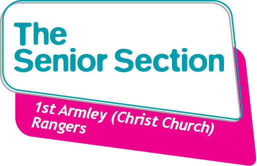

Welcome!
Hello! We are 1st Armley Rangers and we are a Senior Section group based in Armley, which is part of Girlguiding Leeds.
We hope you enjoy our website!
We have included lots of resources to help you and your unit complete the different awards
and see the different opportunities we are open to in Girlguiding!
The Senior Section is part of Girlguiding UK for young women aged between 14 and 26.